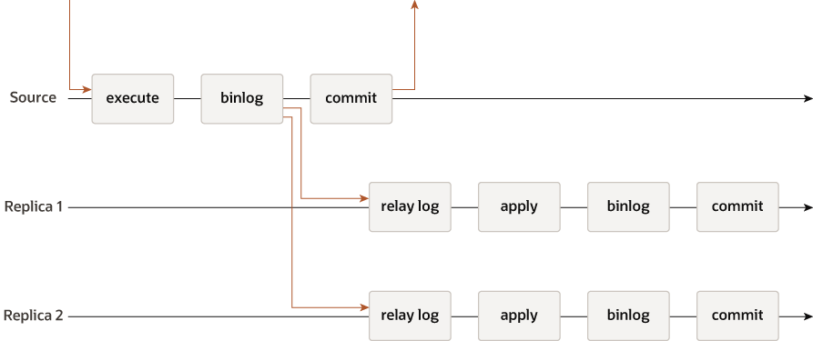
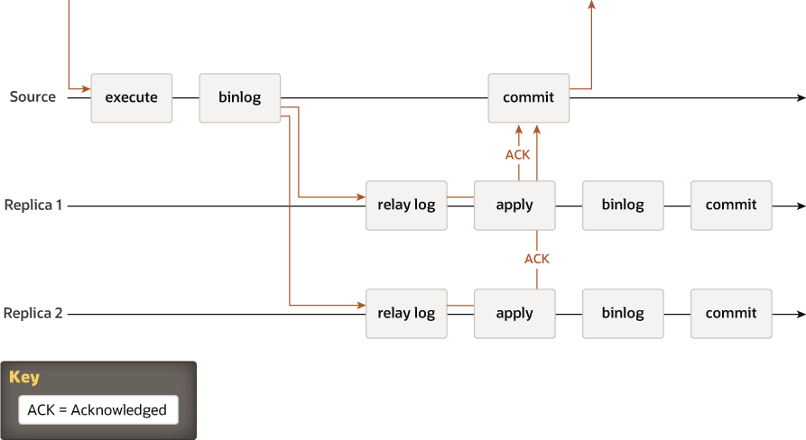
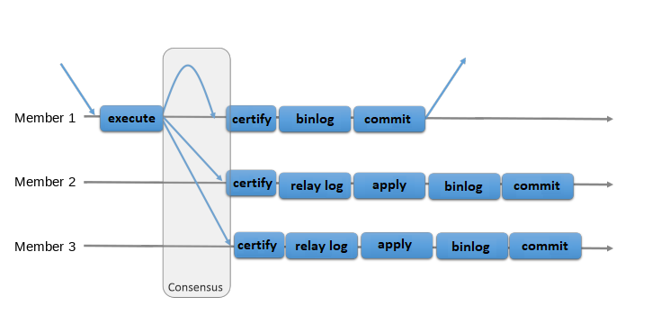
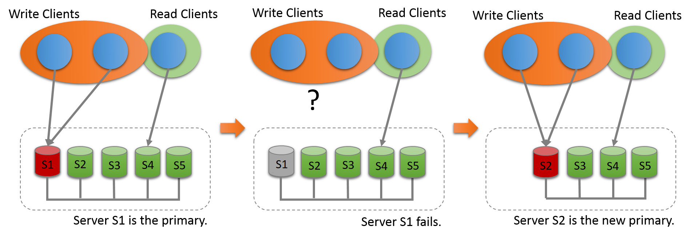
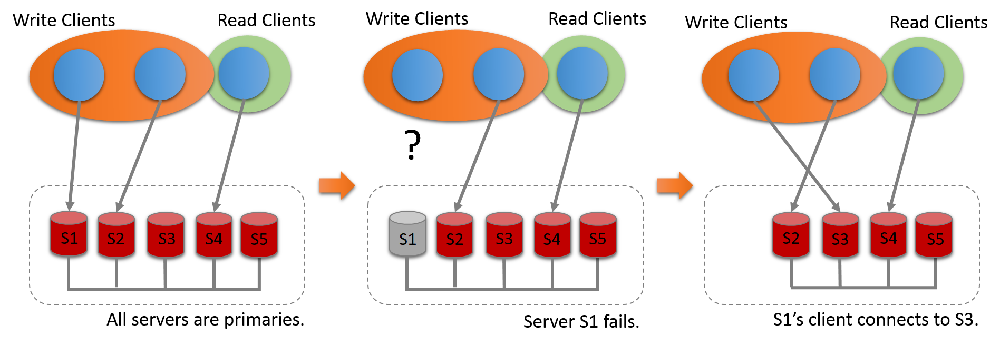

mysql-group-replication¶
mysqlのレプリケーション方式は以下の3種類進化してきた。¶
- MySQL 非同期レプリケーション
- MySQL 準同期レプリケーション
- MySQL グループレプリケーション ← 現在
公式サイト¶
- https://dev.mysql.com/doc/refman/8.0/ja/group-replication-primary-secondary-replication.html
3種類のMGR¶
-
非同期レプリケーション（Asynchronous Replication、异步复制）
- データベースサーバーの故障時に、過去に成功したトランザクションが消失する可能性があります。
- 传统MySQL复制默认提供了一种简单的主从复制方法，这种架构有一个主，以及一个或者多个从，当主节点执行提交事务，然后异步的方式发送到其他从节点，从库重新执行relay log日志内容达到主副本一致的目的，在默认情况下集群所有节点数据都是一致的。
- 
-
準同期レプリケーション（Semisynchronous Replication、半同步复制）
- Semi-synchronous Replication では適切に設定すると一台のサーバーが故障してもトランザクションが消失しないようにすることができます。 一方で、故障サーバーが復帰すると errant transaction という不整合データが発生する可能性があります。
- 异步复制存在一定的数据丢失风险，MySQL又在5.6版本中推出半同步复制，在同步数据协议中添加了一个同步操作，这样意味主节点在commit操作，需要确认最少一个从节点确认接收到并且返回ACK，只有这样主节点才能正确提交数据。
- 
-
MySQL グループレプリケーション（Group Replication Protocol）
- Group Replication は Paxos をベースにした分散合意方式により errant transaction の発生を防止します。
- MySQL MGR 集群最少3个server节点共同组成的分布式集群，一种share-nothing复制方案，每个server节点都有完整的副本。 MGR由若干个节点共同组成一个复制组，一个事务的提交，必须经过组内大多数节点（N / 2 + 1）决议并通过，才能得以提交。组复制的引入，主要是为了解决传统异步复制和半同步复制可能产生数据不一致的问题。组复制依靠分布式一致性协议(Paxos协议的变体)，实现了分布式下数据的最终一致性，提供了真正的数据高可用方案。
- 
-
f 障害を許容するために必要なサーバーの数 (n) は、n = 2 x f + 1 です。
グループサイズ
(node数)過半数
(Majority)許容される即時障害
(Instant Failures Tolerated)7 4 3 6 4 2 5 3 2 4 3 1 3 2 1 2 2 0 1 1 0
シングルプライマリモード¶
- 新規プライマリ選択
- 
- プライマリ選択アルゴリズム
- プライマリメンバーの自動選択プロセスでは、各メンバーがグループの新しいビューを参照し、潜在的な新しいプライマリメンバーを順序付けし、最も適したメンバーを選択します。 各メンバーは、MySQL Server リリースのプライマリ選択アルゴリズムに従って、独自の決定をローカルで行います。 すべてのメンバーは同じ決定に到達する必要があるため、他のグループメンバーがより低い MySQL Server バージョンを実行している場合、メンバーはプライマリ選択アルゴリズムを調整して、グループ内で最も低い MySQL Server バージョンのメンバーと同じ動作をします。
- プライマリを選択するときにメンバーが考慮するファクタは、次のとおりです:
- 最初に考慮される要因は、MySQL Server の最下位バージョンを実行しているメンバーです。 すべてのグループメンバーが MySQL 8.0.17 以上を実行している場合、メンバーは最初にそのリリースのパッチバージョンで順序付けされます。 MySQL Server 5.7 または MySQL 8.0.16 以下を実行しているメンバーがある場合、メンバーは最初にメジャーバージョンのリリースで順序付けされ、パッチバージョンは無視されます。
- 複数のメンバーで最低バージョンの MySQL Server が実行されている場合、考慮される 2 番目のファクタは、メンバーの group_replication_member_weight システム変数で指定されている各メンバーのメンバーの重みです。 このシステム変数を使用できなかった MySQL Server 5.7 をグループのいずれかのメンバーが実行している場合、この係数は無視されます。group_replication_member_weight システム変数は、0-100 の範囲の数値を指定します。 すべてのメンバーのデフォルトの重みは 50 であるため、順序を下げるにはこの値より下の重みを設定し、順序を上げるにはその上の重みを設定します。 この重み付け機能を使用すると、より適切なハードウェアの使用に優先順位を付けることや、プライマリのスケジュールされたメンテナンス中に特定のメンバーにフェイルオーバーすることができます。
- 複数のメンバーで最低バージョンの MySQL Server が実行されており、それらのメンバーのうち複数のメンバーの重みが最高である (またはメンバーの重みが無視されている) 場合、3 番目の要因は、server_uuid システム変数で指定されているように、各メンバーの生成されたサーバー UUID の辞書順であるとみなされます。 サーバー UUID が最も低いメンバーがプライマリとして選択されます。 このファクタは、すべてのグループメンバーが重要なファクタによって決定できない場合に同じ決定に到達するように、保証付きで予測可能なタイエリアとして機能します。
マルチプライマリモード¶
詳細は割愛します、制限多い上にグループ内一番スペック低いサーバに性能引っ張られる、更にネットワーク帯域、速度など要素多く影響されるため、運用に不向きです。
- 公式サイト
- 